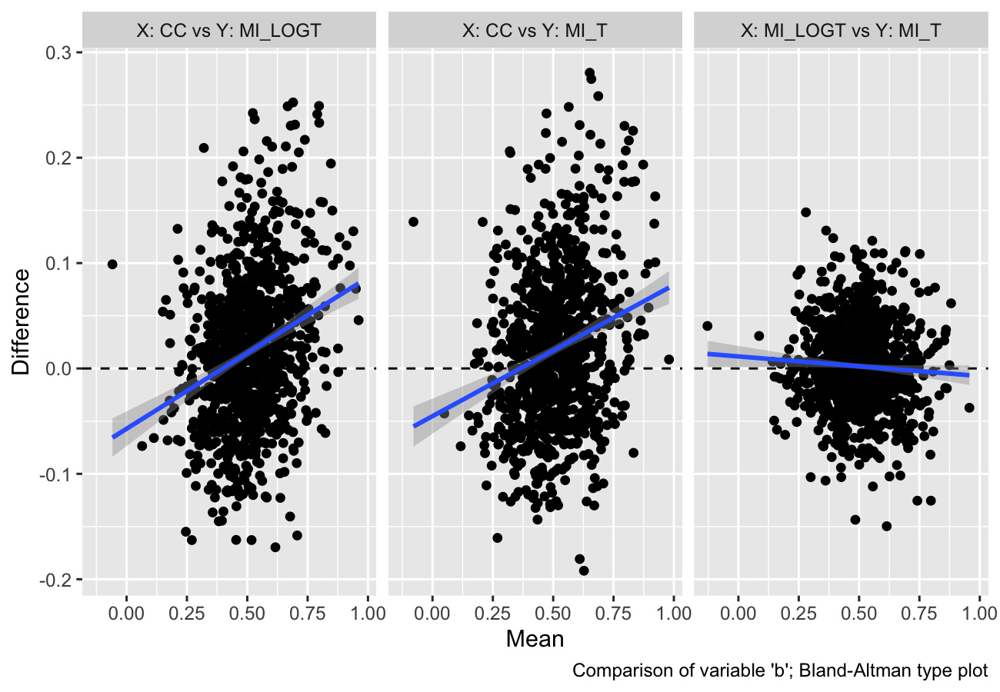
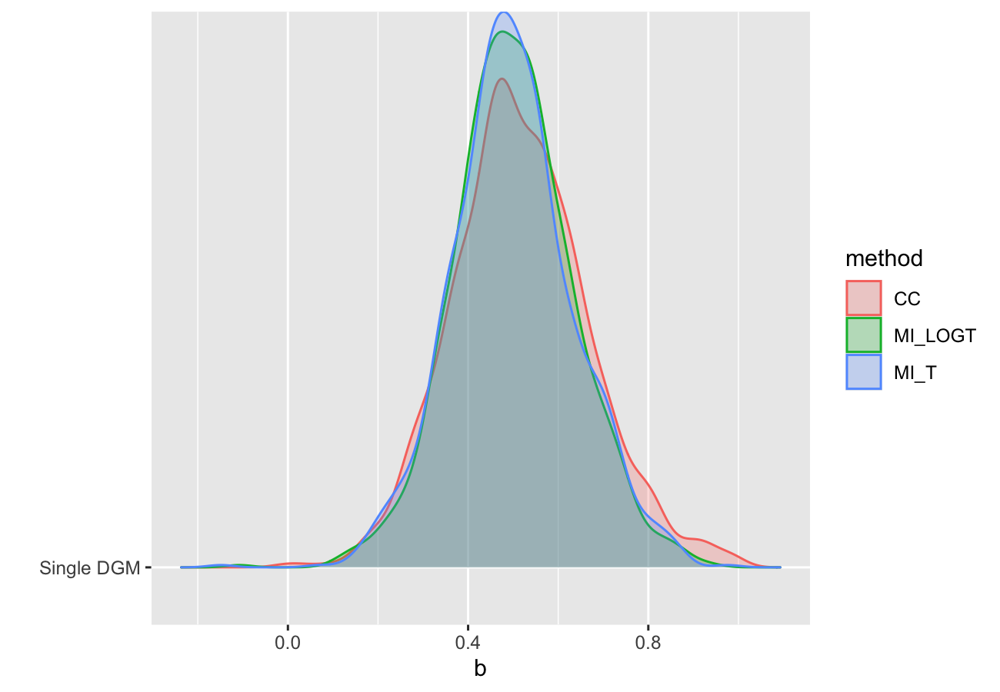

rsimsum is an R package that can compute summary statistics from simulation studies. rsimsum is modelled upon a similar package available in Stata, the user-written command simsum (White I.R., 2010).
The aim of rsimsum is to help to report simulation studies, including understanding the role of chance in results of simulation studies: Monte Carlo standard errors and confidence intervals based on them are computed and presented to the user by default. rsimsum can compute a wide variety of summary statistics: bias, empirical and model-based standard errors, relative precision, relative error in model standard error, mean squared error, coverage, bias. Further details on each summary statistic are presented elsewhere (White I.R., 2010; Morris et al, 2017).
The main function of rsimsum is called simsum and can handle simulation studies with a single estimand of interest at a time. Missing values are excluded by default, and it is possible to define boundary values to drop estimated values or standard errors exceeding such limits. It is possible to define a variable representing methods compared with the simulation study, and it is possible to define by factors, that is, factors that vary between the different simulated scenarios (data-generating mechanisms, DGMs). However, methods and DGMs are not strictly required: in that case, a simulation study with a single scenario and a single method is assumed. Finally, rsimsum provides a function named multisimsum that allows summarising simulation studies with multiple estimands as well.
An important step of reporting a simulation study consists in visualising the results; therefore, rsimsum exploits the R package ggplot2 to produce a portfolio of opinionated data visualisations for quick exploration of results, inferring colours and facetting by data-generating mechanisms. rsimsum includes methods to produce (1) plots of summary statistics with confidence intervals based on Monte Carlo standard errors (forest plots, lolly plots), (2) zipper plots to graphically visualise coverage by directly plotting confidence intervals, (3) plots for method-wise comparisons of estimates and standard errors (scatter plots, Bland-Altman plots, ridgelines plots), and (4) heat plots. The latter is a visualisation type that has not been traditionally used to present results of simulation studies, and consists in a mosaic plot where the factor on the x-axis is the methods compared with the current simulation study and the factor on the y-axis is the data-generating factors. Each tile of the mosaic plot is coloured according to the value of the summary statistic of interest, with a red colour representing values above the target value and a blue colour representing values below the target.
Installation
You can install rsimsum from CRAN:
Alternatively, it is possible to install the development version from GitHub via:
Example
This is a basic example using data from a simulation study on missing data (type help("MIsim", package = "rsimsum") in the R console for more information):
library(rsimsum)
data("MIsim", package = "rsimsum")
s <- simsum(data = MIsim, estvarname = "b", true = 0.5, se = "se", methodvar = "method", x = TRUE)
#> 'ref' method was not specified, CC set as the reference
s
#> Summary of a simulation study with a single estimand.
#>
#> Method variable: method
#> Unique methods: CC, MI_LOGT, MI_T
#> Reference method: CC
#>
#> By factors: none
#>
#> Monte Carlo standard errors were computed.We set x = TRUE as it will be required for some plot types.
Summarising the results:
summary(s)
#> Values are:
#> Point Estimate (Monte Carlo Standard Error)
#>
#> Non-missing point estimates/standard errors:
#> CC MI_LOGT MI_T
#> 1000 1000 1000
#>
#> Average point estimate:
#> CC MI_LOGT MI_T
#> 0.5168 0.5009 0.4988
#>
#> Median point estimate:
#> CC MI_LOGT MI_T
#> 0.5070 0.4969 0.4939
#>
#> Average standard error:
#> CC MI_LOGT MI_T
#> 0.0216 0.0182 0.0179
#>
#> Median standard error:
#> CC MI_LOGT MI_T
#> 0.0211 0.0172 0.0169
#>
#> Bias in point estimate:
#> CC MI_LOGT MI_T
#> 0.0168 (0.0048) 0.0009 (0.0042) -0.0012 (0.0043)
#>
#> Empirical standard error:
#> CC MI_LOGT MI_T
#> 0.1511 (0.0034) 0.1320 (0.0030) 0.1344 (0.0030)
#>
#> % gain in precision relative to method CC:
#> CC MI_LOGT MI_T
#> 1.0000 (0.0000) 1.3105 (0.0394) 1.2637 (0.0384)
#>
#> Mean squared error:
#> CC MI_LOGT MI_T
#> 0.0231 (0.0011) 0.0174 (0.0009) 0.0181 (0.0009)
#>
#> Model-based standard error:
#> CC MI_LOGT MI_T
#> 0.1471 (0.0005) 0.1349 (0.0006) 0.1338 (0.0006)
#>
#> Relative % error in standard error:
#> CC MI_LOGT MI_T
#> -2.6594 (2.2049) 2.2233 (2.3318) -0.4412 (2.2690)
#>
#> Coverage of nominal 95% confidence interval:
#> CC MI_LOGT MI_T
#> 0.9430 (0.0073) 0.9490 (0.0070) 0.9430 (0.0073)
#>
#> Bias-eliminated coverage of nominal 95% confidence interval:
#> CC MI_LOGT MI_T
#> 0.9400 (0.0075) 0.9490 (0.0070) 0.9430 (0.0073)
#>
#> Power of 5% level test:
#> CC MI_LOGT MI_T
#> 0.9460 (0.0071) 0.9690 (0.0055) 0.9630 (0.0060)Visualising results
As of version 0.2.0, rsimsum can produce a variety of plots: among others, lolly plots, forest plots, zipper plots, etc.:


With rsimsum 0.5.0 the plotting functionality has been completely rewritten, and new plot types have been implemented:
- Scatter plots for methodwise comparisons, including Bland-Altman type plots;

- Ridgeline plots.

The plotting functionality now extend the S3 generic autoplot: see ?ggplot2::autoplot and ?rsimsum::autoplot.simsum for further details.
More details and information can be found in the vignette dedicated to plotting:
Citation
If you find rsimsum useful, please cite it in your publications:
citation("rsimsum")
#>
#> To cite the rsimsum package in publications, please use:
#>
#> Gasparini, (2018). rsimsum: Summarise results from Monte Carlo simulation studies.
#> Journal of Open Source Software, 3(26), 739, https://doi.org/10.21105/joss.00739
#>
#> A BibTeX entry for LaTeX users is
#>
#> @Article{,
#> author = {Alessandro Gasparini},
#> title = {rsimsum: Summarise results from Monte Carlo simulation studies},
#> journal = {Journal of Open Source Software},
#> year = {2018},
#> volume = {3},
#> issue = {26},
#> pages = {739},
#> doi = {10.21105/joss.00739},
#> url = {https://doi.org/10.21105/joss.00739},
#> }References
- White, I.R. 2010. simsum: Analyses of simulation studies including Monte Carlo error. The Stata Journal 10(3): 369-385 <http://www.stata-journal.com/article.html?article=st0200>
- Morris, T.P., White, I.R. and Crowther, M.J. 2019. Using simulation studies to evaluate statistical methods. Statistics in Medicine, <https://doi.org/10.1002/sim.8086>
- Gasparini, A. 2018. rsimsum: Summarise results from Monte Carlo simulation studies. Journal of Open Source Software, 3(26):739 <10.21105/joss.00739>
Warning for RStudio users
If you use RStudio and equations are not displayed properly within the RStudio viewer window, please access the vignette from the CRAN website or directly from the R console with the command:
This is a known issue with RStudio (see #2253).